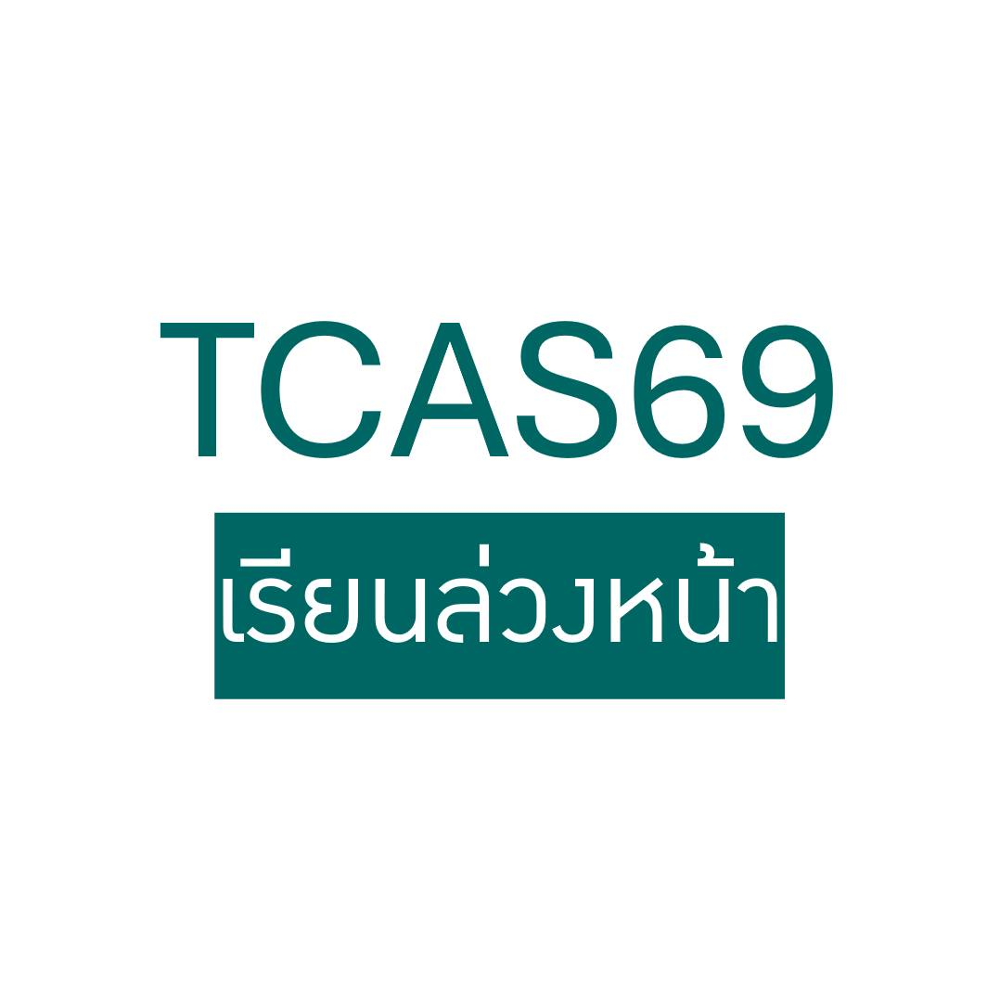

เรียนล่วงหน้าใน TCAS1 คือช่องทางที่เด็กก็ชอบ มหาวิทยาลัยก็ชอบ เพราะพิสูจน์ของจริงได้ก่อนสมัคร
{kind=link}

บทความนี้มองว่าโครงการ เรียนล่วงหน้า (Pre-degree) ในรอบ TCAS1 เป็นหนึ่งในช่องทางที่ “win-win ของแท้” เพราะเด็ก ม.ปลายได้เข้าไปเรียนวิชาระดับมหาวิทยาลัยจริง สอบจริง และได้เกรดจริง ก่อนใช้ผลลัพธ์นั้นมายื่นสมัครในโครงการที่รับเฉพาะผู้ที่เคยเรียนล่วงหน้า
สาระสำคัญจึงไม่ได้อยู่ที่การหาทางลัดเข้าสู่มหาวิทยาลัย แต่คือการทำให้ทั้งเด็กและมหาวิทยาลัยได้ ทดลองของจริงก่อนตัดสินใจจริง เด็กได้รู้ว่าเรียนไหวไหม เหมาะไหม ขณะที่มหาวิทยาลัยก็ได้เห็นศักยภาพจากผลงานในวิชาที่สอนกันอยู่ทุกวัน ไม่ต้องคาดเดาจากเกรดโรงเรียนหรือพอร์ตที่ตรวจสอบยาก
จุดแข็งของโพสต์นี้คือการอธิบาย Pre-degree ในฐานะระบบที่ใช้ performance จริง เป็นตัวกลาง ไม่ใช่ระบบที่ตัดสินจากภาพลักษณ์หรือเอกสารเพียงอย่างเดียว นั่นทำให้มันเป็นเครื่องมือคัดเลือกที่แฟร์และมีประสิทธิภาพกว่าหลายช่องทางในบางบริบท
เด็กได้ตัดสินใจแม่นขึ้น เพราะไม่ต้องเดาว่าชอบหรือไม่ชอบ
สำหรับฝั่งนักเรียน ประโยชน์สำคัญคือการได้ลองเรียนระดับมหาวิทยาลัยจริงก่อน ทำให้ไม่ต้องตัดสินใจบนคำบอกเล่าหรือภาพฝัน เด็กเรียนไปไม่กี่คาบก็มักรู้แล้วว่า “ใช่” หรือ “ไม่ใช่” และเมื่อเรียนผ่านก็ยังมีโอกาสเอาเครดิตไปใช้จริงเมื่อติดเข้าศึกษาต่อ
นี่ทำให้ Pre-degree กลายเป็นการซ้อมชีวิตมหาวิทยาลัย ตั้งแต่ ม.ปลาย ซึ่งผู้เขียนมองว่าเป็นผลลัพธ์ที่มีค่ามาก เพราะช่วยให้เด็กโตขึ้นเร็วขึ้นทั้งในด้านวินัย การจัดการเวลา และการเรียนรู้ด้วยตัวเอง
มหาวิทยาลัยชอบเพราะได้เด็กที่เรียนได้แน่ และมีโอกาสอยู่รอดสูง
ฝั่งมหาวิทยาลัยเองได้ประโยชน์ชัดเจนไม่แพ้กัน เพราะได้เด็กที่พิสูจน์แล้วว่า เรียนได้จริง ในรายวิชาของตนเอง เด็กกลุ่มนี้มักมีความรับผิดชอบสูง ตั้งใจจริง และจัดการภาระเรียนได้ดีตั้งแต่ก่อนเข้ามหาวิทยาลัย
ผู้เขียนเล่าตรง ๆ ว่าในบางกรณี เมื่อเห็นเด็กเรียนดีจริง ภาควิชาก็ยอมรับเกินจำนวนที่ประกาศไว้ แล้วค่อยไปลดจำนวนรับในรอบถัดไป เพราะสิ่งที่สำคัญกว่าตัวเลขคือหลักฐานตรงหน้าว่าเด็กกลุ่มนี้พร้อมเรียนจริง และมีโอกาสสละสิทธิ์หรือรีไทร์ต่ำมาก
ของดีแบบนี้ดีมาก แต่ไม่ใช่สำหรับทุกคน
บทความนี้ไม่ได้ขาย Pre-degree แบบโรแมนติกเกินจริง ผู้เขียนเตือนชัดว่า “ของฟรีไม่มีในโลก” เพราะการเรียนล่วงหน้าต้องอาศัยวินัยสูง ต้องเริ่มวางแผนตั้งแต่ ม.4–5 และต้องรับภาระทั้งโรงเรียน กิจกรรม กวดวิชา และวิชามหาวิทยาลัยไปพร้อมกัน
ในแง่นี้ Pre-degree จึงเหมาะกับเด็กที่ รู้ตัวเร็ว วางแผนดี และมีวินัยสูง มากกว่าจะเป็นคำตอบสำหรับทุกคน แต่สำหรับคนที่เหมาะ มันให้ผลตอบแทนสูงมากทั้งในแง่ประสบการณ์ ความมั่นใจ และโอกาสในการสมัครเข้าศึกษาต่อ
จุดคุ้มค่าที่แท้จริงคือการพิสูจน์ของจริงตั้งแต่ยังไม่เข้ามหาวิทยาลัย
ข้อสรุปของบทความนี้คมมาก เพราะผู้เขียนมองว่าถ้าเดินเกมถูกจังหวะ การเรียนล่วงหน้าอาจ คุ้มกว่าการติวสอบ คุ้มกว่าการทำพอร์ต และคุ้มกว่าการลงประกวดหลายเวทีรวมกัน เพราะมันคือการพิสูจน์ของจริงในสภาพแวดล้อมจริง
เมื่อมองแบบนี้ Pre-degree จึงไม่ใช่ช่องทางเสริมเล็ก ๆ ในระบบ TCAS แต่เป็นหนึ่งในรูปแบบการคัดเลือกที่เชื่อมผลประโยชน์ของทั้งเด็กและมหาวิทยาลัยได้อย่างมีประสิทธิภาพมากที่สุดรูปแบบหนึ่ง